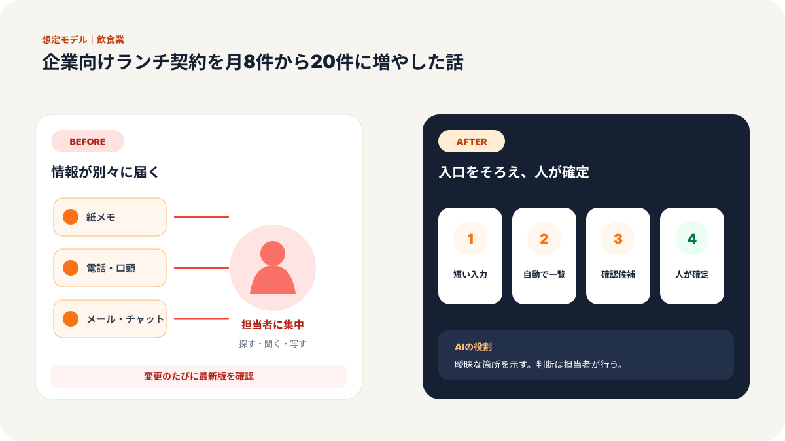
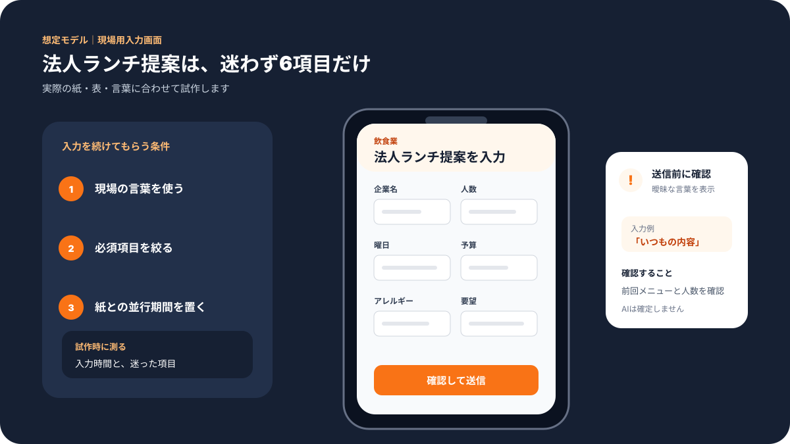
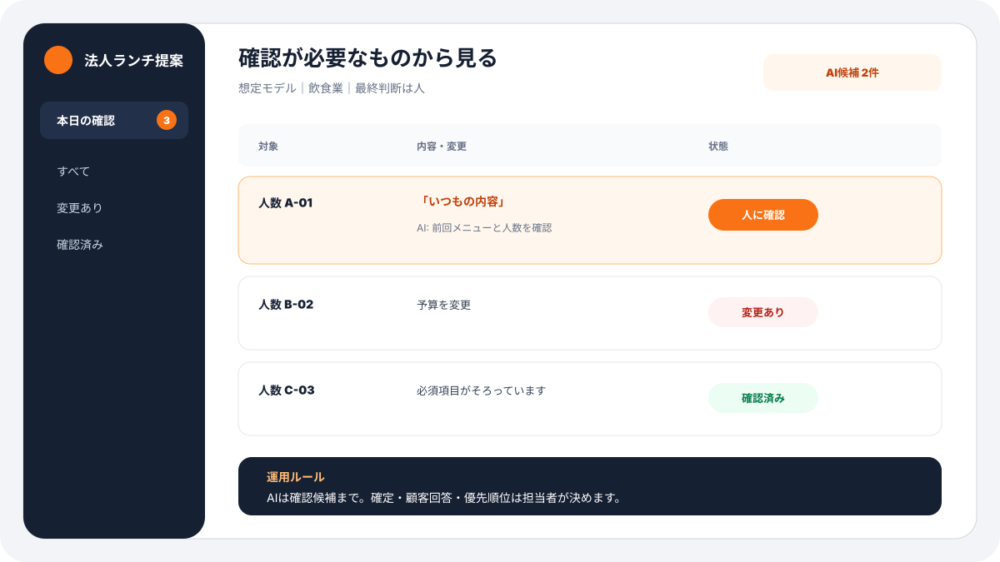
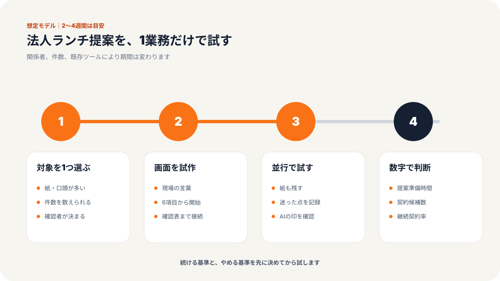
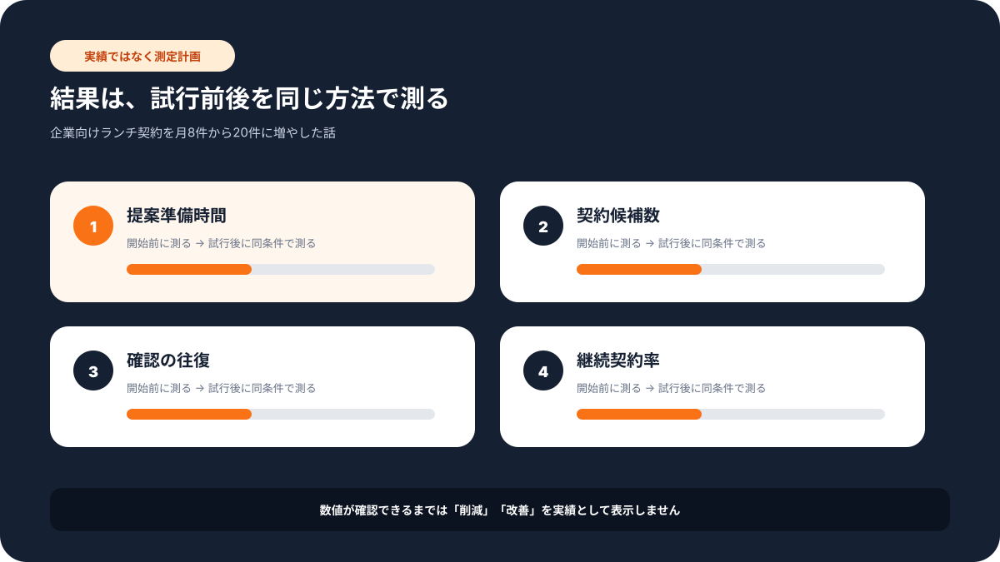

現場での使い方
この記事で変わる業務の流れ
「誰が入力し、誰が確認するか」までイメージできるよう、想定画面と導入手順をまとめています。





# 従業員8名のビストロ／企業向けランチ契約を月8件から20件に増やした話
> 東京都港区・従業員8名のビストロ・法人営業担当の事例
平日のランチ売上を安定させるため、近隣企業へ会議弁当やケータリングを提案していたビストロの事例です。
料理には自信がありました。しかし、企業ごとに人数、予算、配達時間、請求方法が違い、提案書を作るたびに一から考えていました。
「問い合わせは来るのですが、返信に時間がかかって、その間に他店へ決まってしまうことがありました」
月間の企業契約は8件。継続契約率は40%で、単発注文から先へ進みにくい状態でした。
課題：メニューより前に、確認事項が整理されていなかった
聞く内容が担当者ごとに違う
利用人数と予算は聞いていても、会議の目的、アレルギー、配達場所の受け渡し方法、請求書の締め日まで確認できていないことがありました。
後から追加確認が発生し、お客様とのメールが何往復にもなります。回答を待つ間、見積も確定できません。
提案が「弁当の一覧」で終わる
企業が求めているのは、料理だけではありません。
時間どおりに届くか。社内で配りやすいか。毎月頼んでもメニューが重ならないか。請求処理が簡単か。
しかし従来の資料は料理名と価格が中心で、担当者が社内で説明する材料が不足していました。
「おいしさは伝えられても、総務の方が安心できる説明になっていませんでした」
施策：聞き取りから継続提案まで一つの流れにした
ステップ1：最初に聞く8項目を固定
問い合わせ時に次の項目を入力する画面を用意しました。
- 企業規模と部署
- 利用目的
- 人数と一人あたり予算
- 希望日時と頻度
- 配達場所と受け渡し方法
- アレルギーや食事制限
- 請求書の条件
- 特別な要望
電話で受けた場合も、スタッフが同じ画面へ入力します。担当者が替わっても、確認漏れを防げます。
ステップ2：過去の成功提案を型にする
「会議向け」「歓送迎会向け」「定期ランチ向け」など、利用目的ごとに提案の型を作りました。
AIは入力内容と過去の提案を読み、料理構成、料金案、配達体制、継続利用の利点を含む下書きを作ります。最終的な価格と提供可否は、店舗責任者が確認します。
ステップ3：選択肢は3案まで
提案数を増やしすぎると、相手も店側も迷います。
そこで、標準案、予算重視案、特別感を出す案の最大3案に絞りました。違いが一目で分かる表を添え、担当者が社内へ説明しやすくしました。
ステップ4：単発注文の後に継続提案
配達後の感想、余った数、人気メニューを記録し、次回提案へ反映します。
単発利用の企業には、同じ内容を繰り返すのではなく、月ごとのメニュー変更、注文締切、請求書一本化を含む継続案を案内しました。
成果：新規契約と継続率が同時に改善
| 項目 | Before | After |
|------|--------|-------|
| 企業向けランチ契約 | 月8件 | 月20件 |
| 継続契約率 | 40% | 80% |
| 新規企業開拓の効率 | 1倍 | 3倍 |
| 平日ランチ売上 | 基準値 | 前年比65%増 |
企業契約は月8件から20件へ増えました。継続契約率も40%から80%へ改善し、毎月の売上を見通しやすくなりました。
年間売上は約650万円増加。単に営業件数を増やしたのではなく、問い合わせへの返答速度と提案の分かりやすさを改善した結果です。
「何を提案するかで悩む時間が減り、お客様の条件を確認する時間に使えるようになりました」
なぜ効果が出たか
AIが営業を代わったからではありません。
お客様へ聞く項目、店内で確認する項目、提案に含める項目を先にそろえたからです。
AIはその型に沿って下書きを作ります。人は、厨房の状況、配送能力、お客様との関係を見て確定します。
この分担により、提案の速さと現実性を両立できました。
飲食店以外にも応用できる
法人向けの定期注文を扱うパン店、仕出し店、菓子店、コーヒー店にも応用できます。
また、清掃、花、写真撮影など、条件を聞いて個別提案する小規模サービス業でも同じ流れを使えます。
最初は、よくある問い合わせ10件を並べ、共通して聞く項目を見つけるところから始めます。
提案の品質を保つ確認表
返答を速くしても、約束できない内容を出しては逆効果です。送信前に、厨房の対応数、配達可能時間、容器の在庫、アレルギー対応、請求条件を確認する表を用意しました。
特にアレルギーは、AIの提案だけで安全を判断しません。使用食材と調理環境を店舗側が確認し、対応できない場合も明確に伝えます。
スタッフ全員が使えるようにした方法
担当者だけが使える複雑な仕組みにすると、休みの日に止まります。
入力画面には難しい営業用語を使わず、「何人で使うか」「いつ届けるか」「避ける食材はあるか」のように、電話中でも答えられる言葉を使いました。
提案の下書きには、確認が必要な項目を目立たせます。分からないまま埋めず、空欄で担当者へ戻す運用です。
継続契約で見たのは売上だけではない
月20件に増えた後は、注文数だけでなく、時間どおりに届いたか、余りが多くなかったか、問い合わせが何回発生したかを記録しました。
売上が増えても、厨房と配送の負担が急増すれば長続きしません。受けられる上限を先に決め、無理な日は代替日時や内容を提案します。
小さく始める場合
まず、過去1か月の問い合わせを10〜20件集めます。確認漏れが多かった項目と、成約した提案に共通する説明を探します。
その二つを入力画面と提案の型へ反映するだけでも、返信の往復を減らせます。大きな営業システムを入れる前に試せる方法です。
数字を追う期間を決める
導入後は、契約件数だけで判断しません。問い合わせから初回返信までの時間、追加確認の回数、見積修正の回数、継続提案への返答率を毎月確認します。
返信が速くても修正が増えていれば、聞き取り項目が足りません。契約が増えても継続率が下がれば、提供後の確認が不足しています。このように途中の数字を見ると、どこを直すべきか分かります。
AIへ渡さない情報も決める
企業担当者の個人情報、未公開の社内行事、支払条件など、扱いに注意が必要な情報があります。必要な範囲だけを使い、閲覧権限と保存期間を決めます。
提案づくりの便利さと、顧客情報の管理は別の課題です。店舗内で「入力してよい情報」「外部サービスへ送らない情報」を短い一覧にし、新しいスタッフにも共有しました。
改善は月に一度まとめる
毎回指示文を変えると、どの変更が効いたか分かりません。現場の気づきはメモへ集め、月に一度、入力画面と提案の型を更新します。
運用を止めず、同じ条件で比較できること。小さな店舗ほど、この落ち着いた改善が定着につながります。
気になる営業業務があれば、お気軽にお声がけください。
弊社では中小企業のAI活用・システム開発の伴走支援を行っています。